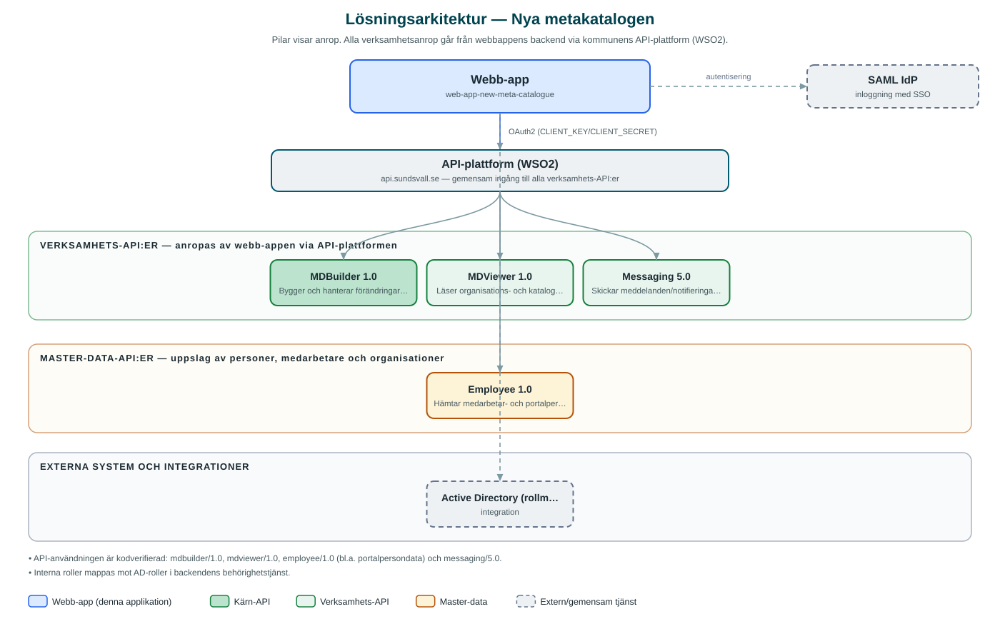

Nya metakatalogen
Internt verktyg för att hantera kommunens organisationsstruktur, organisationsförändringar och ansvar.
Om applikationen
Nya metakatalogen är ett internt administrativt verktyg där behöriga medarbetare hanterar kommunens organisationsträd. Användare kan skapa organisationsförändringar som utkast, se vilka delar av organisationen som berörs, söka och filtrera bland förändringar samt exportera förlagor av organisationer.
Verktyget visar organisations- och persondata från kommunens gemensamma register och har en särskild vy för ansvar. Ändringar byggs upp i en hanteringsyta innan de verkställs, och meddelanden kan skickas via kommunens meddelandetjänst.
Inloggning sker med kommunens gemensamma inloggning (SAML) och behörigheter styrs via roller kopplade till AD-grupper.
Det här stödjer applikationen
- Hantera organisation – Skapa och redigera organisationsförändringar som utkast innan de verkställs.
- Ansvarsvy – Översikt över ansvar kopplade till organisationen.
- Sök och filtrera – Sökning och filtrering bland organisationsförändringar.
- Export – Export av förlagor av organisationer.
- Persondata – Visar medarbetaruppgifter från kommunens personregister.
Teknisk dokumentation
Nedan beskrivs hur applikationen är uppbyggd, vilka API:er den använder och vad som krävs för att driftsätta den. Informationen är härledd ur källkoden och dess konfiguration på GitHub.
Arkitektur

Applikationen består av en webbaserad frontend (Next.js/React med kommunens designsystem) och en backend (Node.js med Express och routing-controllers) som utvecklas i samma kodbas. Verksamhetsanrop går via kommunens gemensamma API-plattform (WSO2) – frontend pratar aldrig direkt med underliggande system. Inloggning: SAML (SSO) med behörighetsroller mappade mot AD-grupper. Övriga integrationer som förekommer i koden: SAML IdP, Active Directory (rollmappning), WSO2 API-gateway.
Teknikstack
- Frontend: Next.js/React med kommunens designsystem
- Backend: Node.js med Express och routing-controllers
- Test: Jest och Cypress
API-beroenden
Applikationen konsumerar följande API:er via kommunens API-plattform. Versionerna är hämtade ur källkodens API-konfiguration.
| API | Version | Användning |
|---|---|---|
| MDBuilder | 1.0 | Bygger och hanterar förändringar i metakatalogens organisationsstruktur. |
| MDViewer | 1.0 | Läser organisations- och katalogdata för visning. |
| Messaging | 5.0 | Skickar meddelanden/notifieringar. |
| Employee | 1.0 | Hämtar medarbetar- och portalpersondata. |
Konfiguration och driftsättning
- Miljöfiler för frontend (.env-example) och backend (.env.example.local)
- CLIENT_KEY/CLIENT_SECRET för API-gatewayn
- SAML-inställningar med IdP-adress och certifikat
Noterbart ur källkoden
- API-användningen är kodverifierad: mdbuilder/1.0, mdviewer/1.0, employee/1.0 (bl.a. portalpersondata) och messaging/5.0.
- Interna roller mappas mot AD-roller i backendens behörighetstjänst.
Källkod
Källkoden är öppen och finns hos Sundsvalls kommun på GitHub. I källkodsförrådet finns även instruktioner för att klona, konfigurera och starta applikationen i egen miljö.